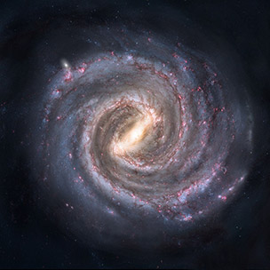

On my last website, I briefly covered the fact that we are not alone in the universe. On this page I'll be showcasing the kind of creatures that also occupy our galaxy.
There is no accurate way to tell just how many sentient creatures there may be living amongst the stars, though over the years a small list has been compromised.
Sources: My Previous Website, as well as The Races of the Milky Way Galaxy